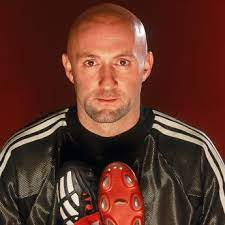
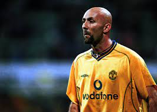
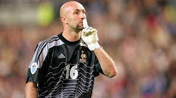

|  |  |  |
Величайший французский вратарь всех времен
Краткая биография
Фабье́н Але́н Барте́з (фр. Fabien Alain Barthez; род. 28 июня 1971, Лавлане, Франция) — французский футболист, вратарь. Выступал за команды «Тулуза» (1989—1992), «Олимпик Марсель» (1992—1995, 2004—2006), «Монако» (1995—2000), «Манчестер Юнайтед» (2000—2004) и «Нант» (2006—2007). Победитель Лиги чемпионов УЕФА 1992/93, двукратный чемпион Англии. За национальную сборную Франции выступал в период с 1994 по 2006 год, в общей сложности проведя в её составе 87 матчей, пропустив 49 мячей. Вместе со сборной Бартез стал чемпионом мира (1998), чемпионом Европы (2000) и победителем Кубка конфедераций (2003). После чемпионата мира 2006, француз объявил о завершении карьеры в национальной сборной, а через год в целом футбольную карьеру. После завершения футбольной карьеры в 2008 году стал автогонщиком[2]. Прозвище «Божественный Лысый» получил из-за своей фирменной бритой головы
Клубная карьера
Клуб
Годы
Матчи
Тулуза
90-92
26
Марсель
92-95
106
Монако
95-00
143
МЮ
00-03
92
Марсель
04-06
74
Нант
2007
14
Нацинальная сборная
Сборная
Годы
Матчи
Франция
94-06
87
Трофеи и титулы
Социальные сети